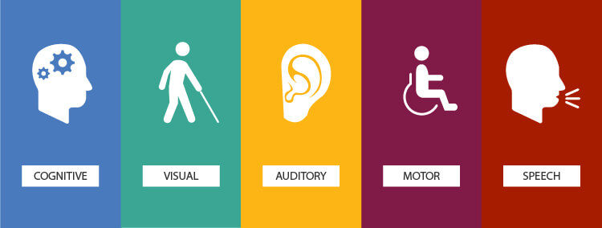

Introduction
This website will introduce the basic principles of webpage accessibility. It will also include several example section with accessibility measure integrated into the html markup.
What is accessibility and why is it important?
Webpage accessibility is the practice of making a webpage accessible through as many platforms as possible. Four components of accessibility should be considered: an accessible webpage must be perceivable, operable, understandable, and robust (POUR).
- Perceivable
- Webpages must be designed so that the user can perceive all webpage content with one or more of their senses.
- Operable
- Interactive components of a webpage must be usable and not require interaction outside the user's abilities.
- Understandable
- Webpage components must be comprehensible to the user such that they are able to understand and use the website’s content.
- Robust
- Webpages must be widely compatible with different user agents and other interface technologies.
Accessibility example 1: Images
Images are a relatively simple webpage component; however they heavily rely on a single sense: vision. For vision impaired users, image elements (img) are not perceivable. The alt attribute gets around this limitation by specifying a text alternative to an image. This text should be a descriptive alternative that replaces any necessary component of the image.
The following example table incorporates a descriptive alt attribute to promote accessibility:
There are five types of accessibility fields that may impact user ability to interact with a webpage:

Accessibility example 2: Tables
Careful table design is important to make a table understandable.
Outside a webpage environment, consider the layout and flow of your table.
Try to keep your tables as simple as possible without losing their meaning.
When marking up your table, use the caption element to give your table a title.
Use table header elements (th) when applicable, and connect each table header with their domain using the scope attribute of table headers.
or the header attribute of table data cell elements (td).
These accessibility measures increase compatibility for screen readers and brail displays, which makes your site more
robust.
The following example table incorporates a caption and the scope elements to promote accessibility:
| Impairment | Assistive Technology | Considerations |
|---|---|---|
| Visual | Screen readers, Braile display, Screen magnifier | Individuals with impaired sight may not be able to see content displayed on the screen. To make a page accessible to vision impaired users, it is important to make sure any visual information (e.g., an image) has an alternative description that can be read by a screen reader or displayed as braile. |
| Auditory | Subtitled videos, Transcripts | Individuals with hearing impairments may not be able to hear any audio component of your webpage. To make a page accessible to hearing impaired users, include transcripts or subtitles for any audio component. |
| Motor | Modified computer controls | Individuals with impaired motor control may have modified computer control. To make a page accessible to motor impaired users, make sure your webpage is easily controlled. All webpages should be navigable with only a keyboard. |
Accessibility example 3: Forms
Tables can be a tricky component of webpages. They require user interaction, so it is vital they are operable. It is also vital to make forms understandable. One accessibility measure that can increase user comprehension is the fieldset and legend elements. Fieldset is used to subdivide your form into distinct sections, and the legend element can be used to label these sections. To make a page more compatible with screen readers and brail displays, and therefore more robust, the label element can be used to clarify the relationship between fields and text by implicitly or explicitly grouping them together.
The following example table incorporates a fieldset, legend, and label elements to promote accessibility: